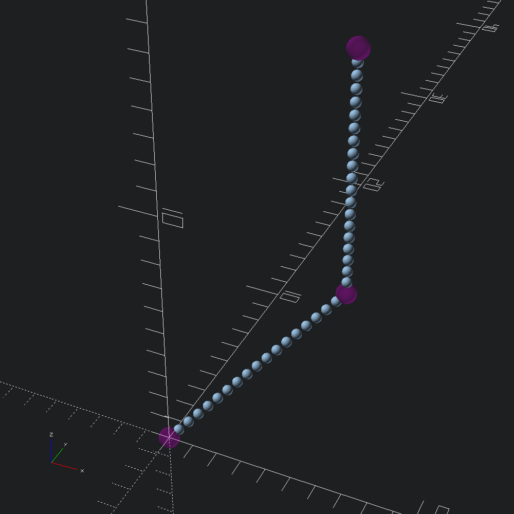
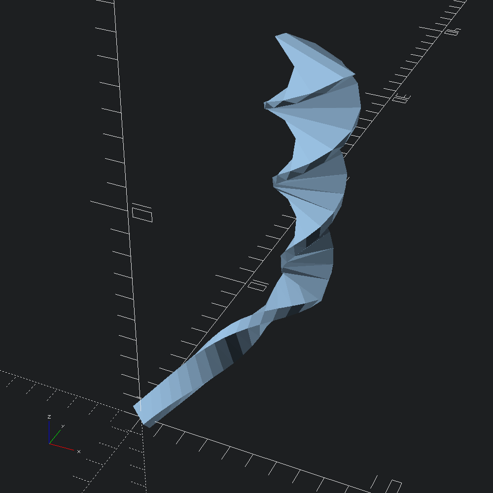

open Scad_mlOftentimes, we would just like to define our paths without colinear points, such that it only consists of corners. However, some applications call for more fine sampling, and in those times we can reach for Path3.resample or Path3.subdivide. For this example, the exact number of points isn't a concern, so we'll specify a new point spacing as our ~freq.
let path = [ v3 0. 0. 0.; v3 5. 5. 5.; v3 5. 5. 15. ]
let resampled = Path3.subdivide ~freq:(`Spacing 0.5) pathLets visualize our original path, and the resampled points with Path3.show_points to get a sense of how fine our ~freq parameter has gotten us.
let () =
let old_marks =
let f _ = Scad.(color ~alpha:0.2 Color.Magenta @@ sphere ~fn:36 0.4) in
Path3.show_points f path
and new_marks = Path3.show_points (fun _ -> Scad.sphere ~fn:36 0.2) resampled in
Scad.to_file "resampled_path.scad" (Scad.union [ old_marks; new_marks ])
One such alluded to application for resampling, is when additional transformations such as scaling and twisting along a path extrusion is desired.
let () =
let mesh =
Mesh.path_extrude
~scale_k:0.3
~scale:(v2 4. 1.)
~twist:(Float.pi *. 4.)
~path:resampled
@@ Poly2.square ~center:true (v2 1. 0.5)
in
Scad.to_file "scaling_twister_extrude.scad" (Mesh.to_scad mesh)